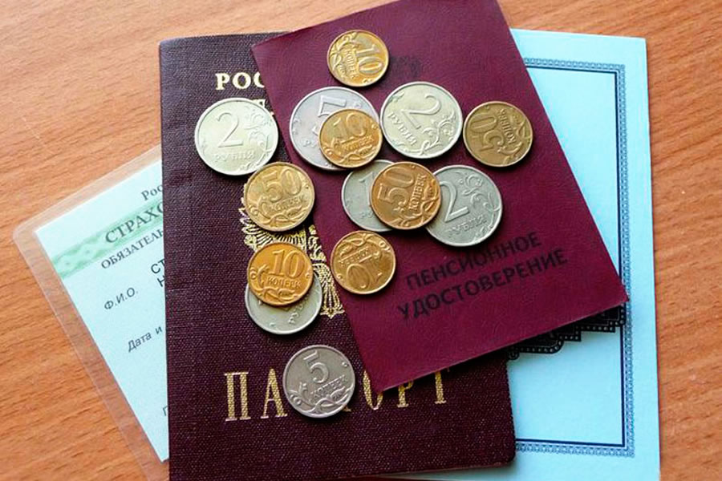

Единовременная выплата пенсионерам в 2020 году: кому положена и какие прибавки получат остальные граждане | Законы, пенсии, финансы | Яндекс Дзен
 Регистрация Войти Законы, пенсии, финансы 13 494 подписчика Подписаться
Единовременная выплата пенсионерам в 2020 году: кому положена и какие прибавки получат остальные граждане
10 декабря 2019Единовременная выплата пенсионерам в 2020 году положена только тем, кто ни разу не получал прибавку в 5000 рублей. В бюджет заложено всего 930 тыс. рублей на эти расходы. Таким образом, денежную помощь получит не более 186 человек. Но тем, кто не получит помощь, не стоит расстраиваться - депутаты обещают увеличить размер пенсии.
В новостях писали, что госдума выделила деньги на выплаты единовременной помощи. Кому верить?
В 2017-2020 годах и вправду выделяли средства на выплату 5000-тысячных прибавок для пенсионеров. Однако речь шла о совсем небольших суммах (вроде ранее упомянутых 930 тысяч рублей). В последний раз крупная сумма на выплату единовременной помощи выделялась в 2016 году.
Кому положена единовременная выплата: последние новости
Помощь в 5000 рублей выплатят военным, неработающим и работающим пенсионерам, которые получали пенсию на момент 31 декабря 2016 года, но не получили единовременную выплату из-за приостановкой пенсионного обеспечения.
В эту категорию входят следующие лица:
граждане пенсионного возраста, которые переселились в страну, с которой у Пенсионного фонда России нет договора; люди, которые полгода и дольше не получали пенсию по личным причинам; пенсионеры-инвалиды, которые не прошли переосвидетельствование МСЭ в отведенные сроки, но имели право на пенсию. Важно : если пенсионер имел право на получение единовременной выплаты, но не смог воспользоваться деньгами из-за смерти, сумму в 5000 рублей могут забрать его наследники. Эти нормы действуют в Московской области, Крыму и всех остальных регионах РФ.Почему в России отменили 5000-тысячные выплаты и будет ли возврат этих платежей?
Выплата в 5000 рублей для военных, работающих и неработающих пенсионеров проводилась на одноразовой основе. Госдума выделила эти деньги, чтобы помочь наиболее уязвимым гражданам в период резкой инфляции. Однако с 2017 года падение рубля прекратилось, а индексация пенсий опередила рост цен.
В рамках пенсионной реформы решили ежегодно увеличивать размер пенсии госслужащим и другим гражданам на 500-1500 рублей вместо того, чтобы раз в год выплачивать 5000 рублей.
Когда будет и сколько выплатят прибавок к пенсии с 1 января 2020 года?
Размер пенсии повысится на 6.6%. Среднестатистический пенсионер получит ежемесячную прибавку в 500-1000 рублей. В Госдуме пообещали ежегодно повышать размер пенсии вплоть до 2024 года.
Важно: эти изменения коснутся получателей страховых и накопительных пенсий. Социальные пенсии обещают повысить на 7% с 1 апреля. А военные пенсии увеличат с 1 октября в рамках индексации денежного довольствия военнослужащих.
Как получить ежемесячную прибавку к пенсии для работающих пенсионеров?
Для повышения пенсий им придется покинуть место работы. Но государство ежегодно увеличивает размер минимальной зарплаты, так что доход этих групп населения в любом случае увеличится.
Важно : неработающим пенсионерам не нужно обращаться в ПФР для получения надбавки. Индексация (повышение) пенсии проходит автоматически.Выплаты в 5000 рублей и ежемесячные прибавки из регионального бюджета
В 2018 году жителям Московской области в возрасте 70-лет и больше выплатили 5000 рублей. В следующих годах такие выплаты не производились, но к ним вполне могут вернуться в следующие годы.
Пока же в Москве и Московской области, а также в ряде других регионов РФ пенсионерам дают прибавку из регионального бюджета. Крупнейшие доплаты получают москвичи - их минимальный размер пенсии составляет 19 500 рублей. Но на такую помощью могут рассчитывать только те, кто прожил в столице не менее 10 лет и предоставил следующие документы:
СНИЛС; пенсионное удостоверение; документ удостоверения личности с отметкой о проживании в Москве.Всем остальным пенсионерам в Москве платят пенсию от 12 578 рублей. Вы можете узнать размер прибавок к минимальной пенсии в вашем регионе, обратившись в отделение ПФР.
Важно : размер доплат един как для мужчин, так и для женщин.Подводя итоги
Как и в предыдущие годы, пенсионерам не станут выплачивать 5000 рублей. Их смогут забрать только те граждане, которые все еще не получили выделенные им деньги в 2017 году.
Однако отказ от единовременной помощи не является плохой новостью. Пенсионеры получат в 2020 году дополнительные 7-15 тысяч рублей благодаря увеличению ежемесячного размера пенсии.